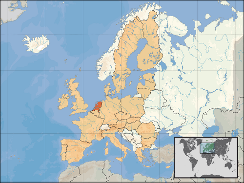

Olanda, oficial Țările de Jos (în neerlandeză Nederland, în frizonă Nederlân) este o monarhie constituțională, stat membru fondator al Beneluxului și al Uniunii Europene, situat în nord-vestul Europei în vecinătatea Mării Nordului, Belgiei și Germaniei, incluzând alături de Regatul Țărilor de Jos și câteva colonii.
Numele colocvial de Olanda, sub care mai sunt cunoscute Țările de Jos, acoperă însă doar o parte din teritoriul țării, anume provinciile Olanda de Nord și Olanda de Sud. Locuitorii Țărilor de Jos sunt numiți în engleză Dutch, nume derivat de la aceeași rădăcină ca germană deutsch, adică "germani". Limba neerlandeză este forma literară a germanei plate, limba vorbită ca dialect în nordul Germaniei.

Un sfert din teritoriul Țărilor de Jos se află sub nivelul mării cu altitudine medie, statul având cea mai joasă altitudine din lume. De asemenea este una dintre țările cele mai dens populate din lume. Este cunoscută pentru digurile, morile și lalelele sale, dar și pentru toleranța sa pe plan social. Este membră NATO și UE. Pe teritoriul său se află sediul Curții Penale Internaționale
Capitala Țărilor de Jos este Amsterdam. Amsterdam este capitala oficială conform Constituției. La Haga (neerlandeză Den Haag, sau oficial ’s-Gravenhage) se află sediul guvernului, reședința regală, precum și cea mai mare parte a ambasadelor.